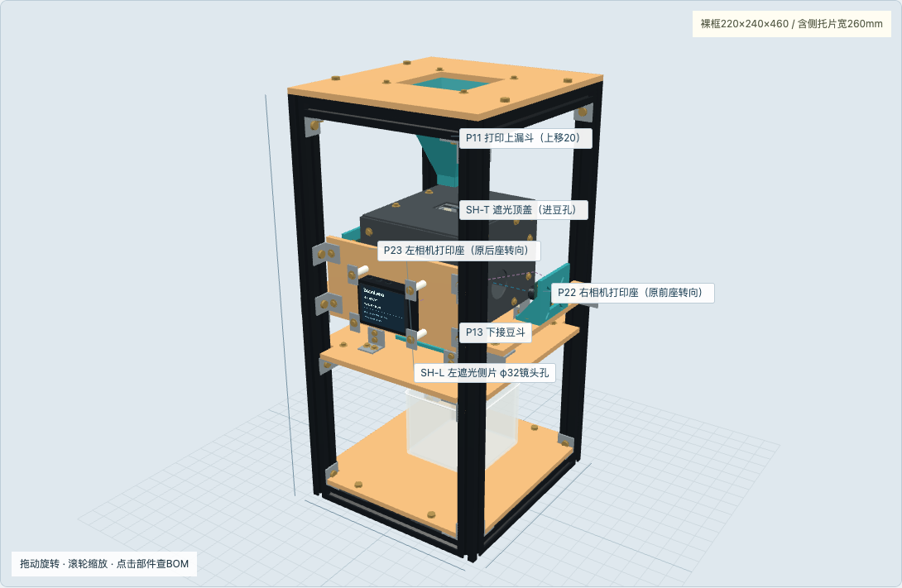
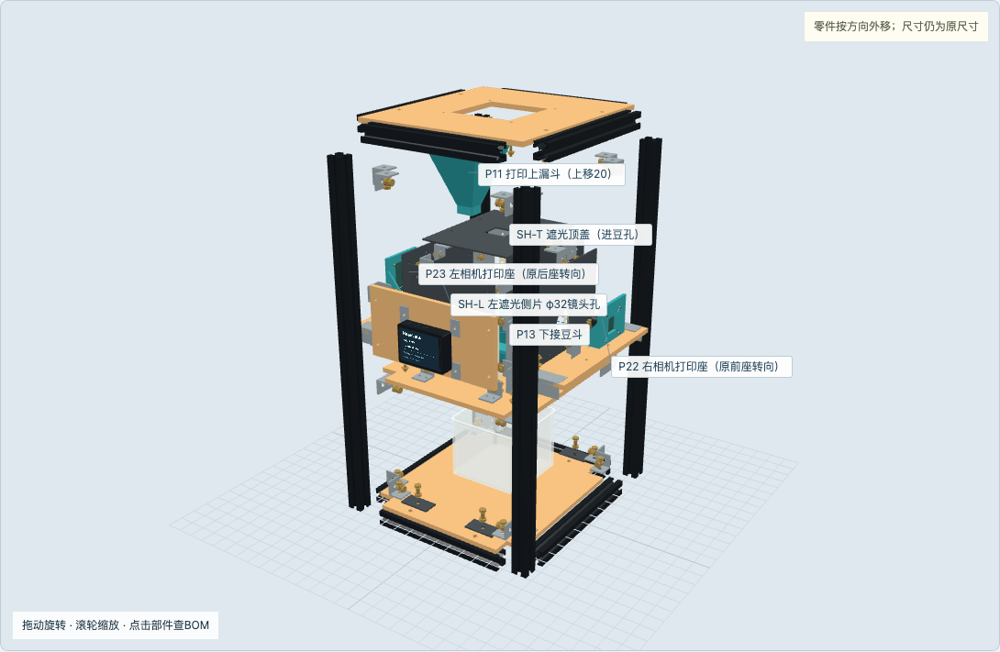
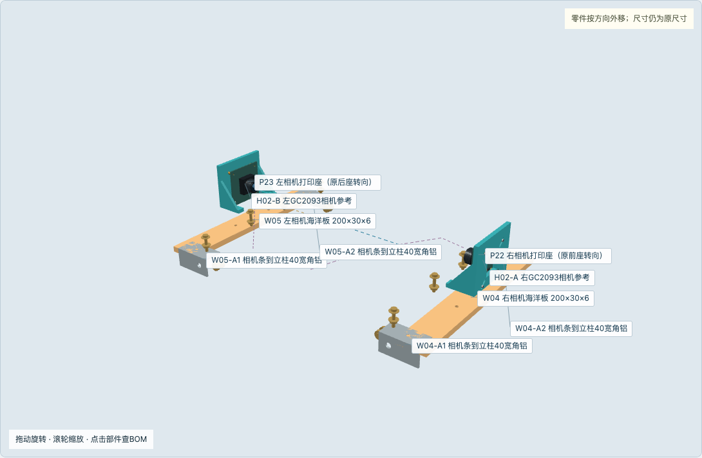
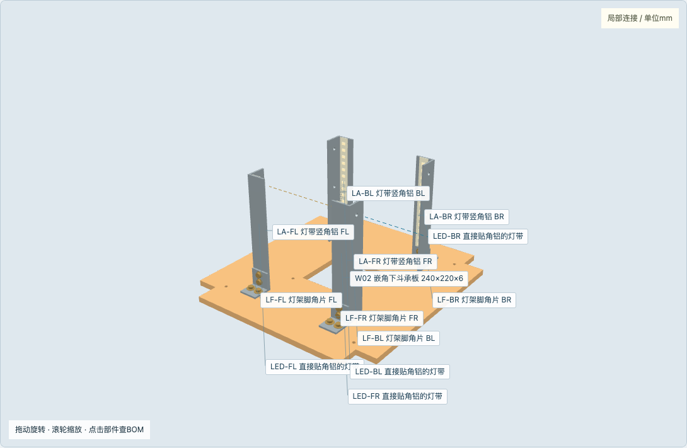
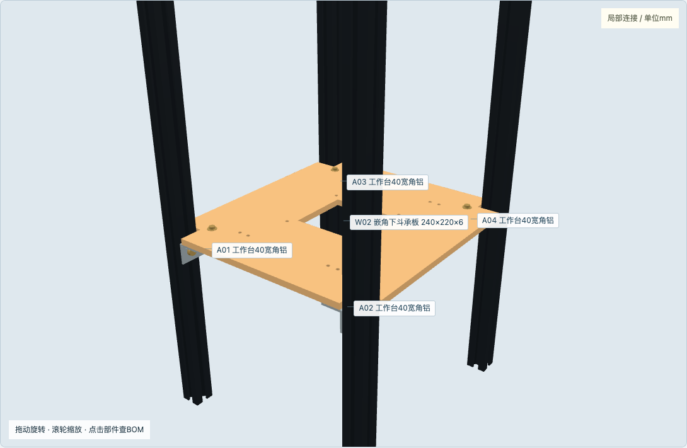
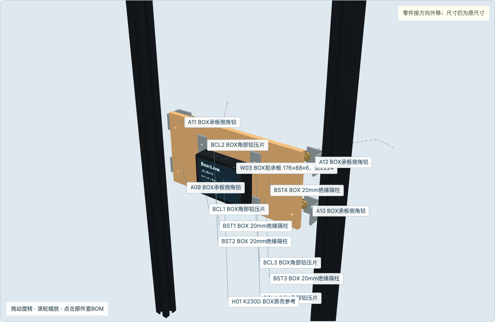
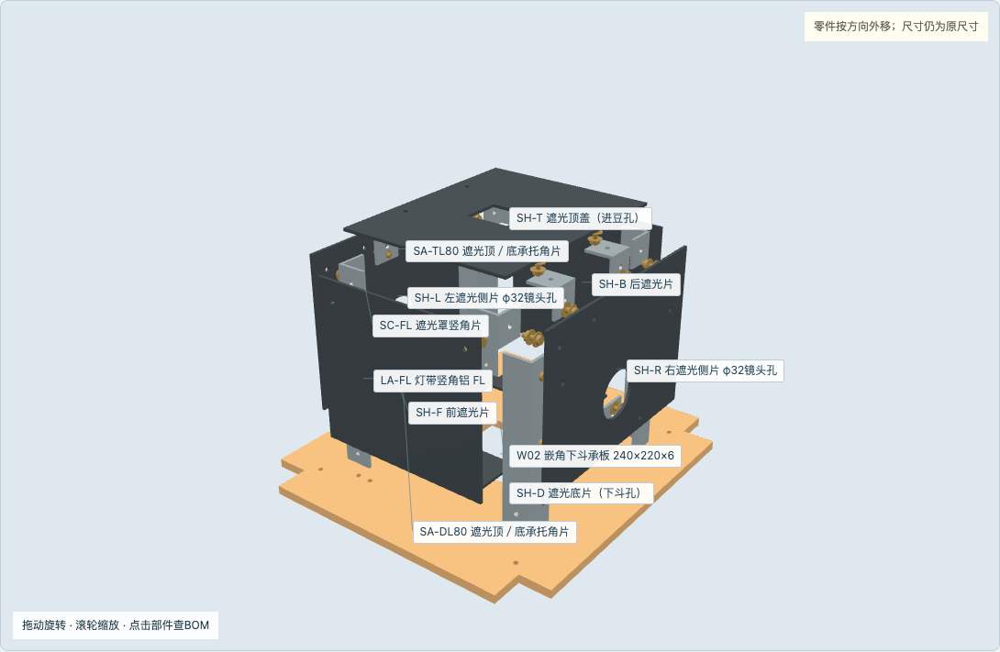
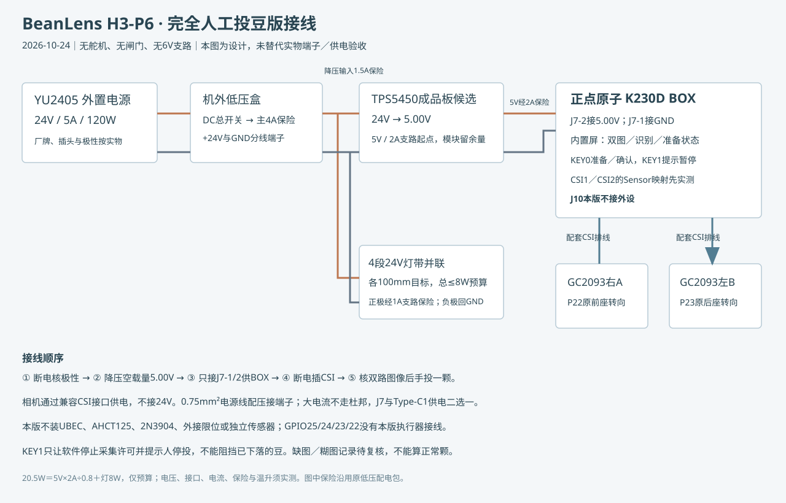

顶／底／下斗承板均240×220；六片遮光罩真实装入，左右相机间距200。

4原打印件保留；6木板、6黑PP罩片、金属托片、型材都有明确连接。

整顶板底Z460、顶466；原上斗整体上移20mm。
两条200×30木条及原打印座保持，遮光侧片增加φ32镜头孔。

右侧角铝回折翼朝外；新增罩片孔不穿LED线路。

20mm立柱旁还有2mm角码竖边；底框检查发现20.5缺口仍会干涉。

承板仍底224，前Y20；新5V线从原壳开口引出，具体走线按实物。

不再只有一个空开关；实物模式黑色不透明，透明模式用于看内部。

不装6V、舵机、限位或PWM缓冲，J10不接本版外设。

已核原厂原理图第1／3页；脚号排列不是实物朝向，先核丝印与导通。
BOM59行；原打印几何和型材切割保持，三块大木板与罩件按P6加工。